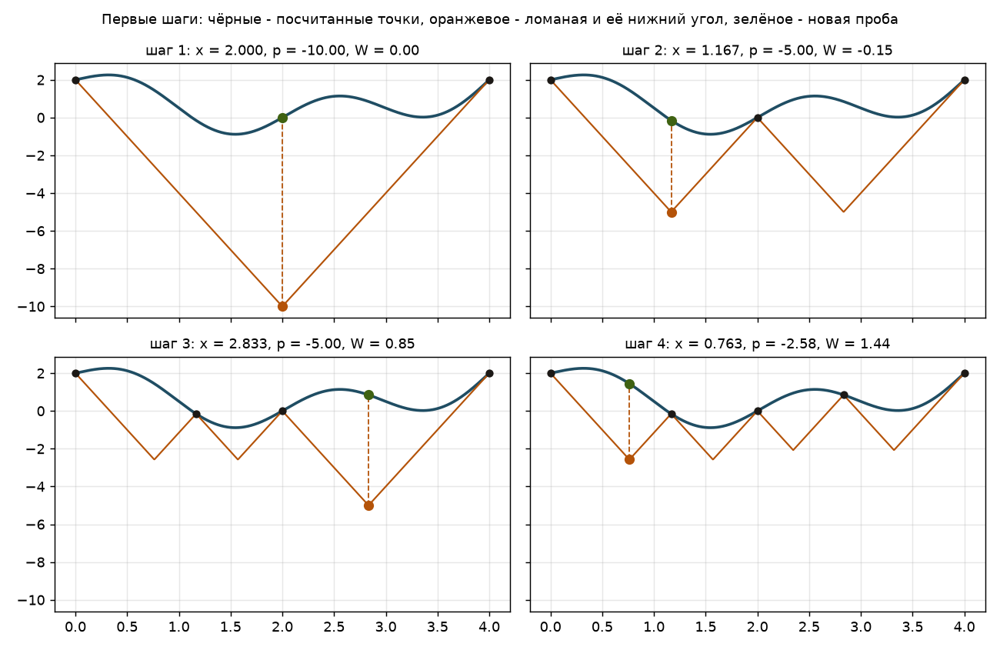
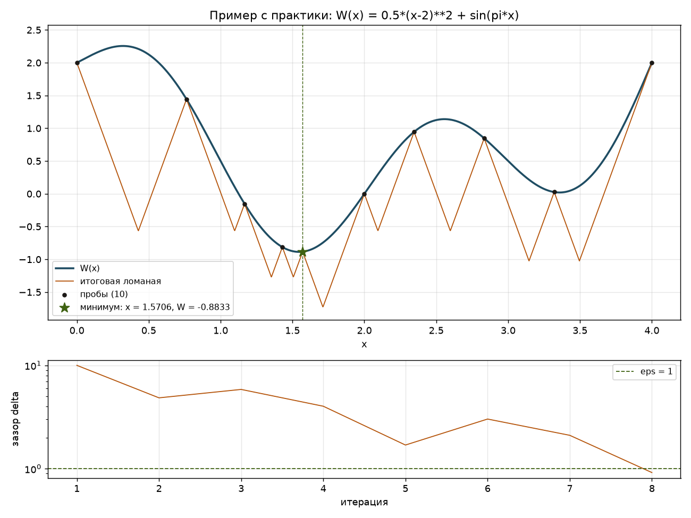
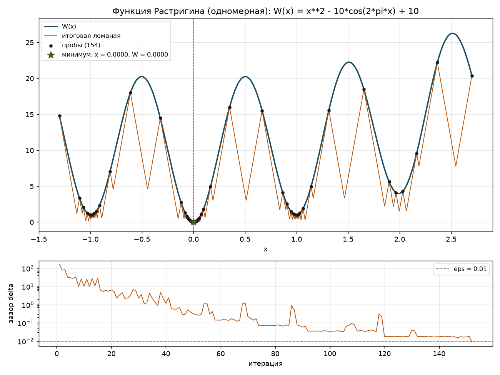
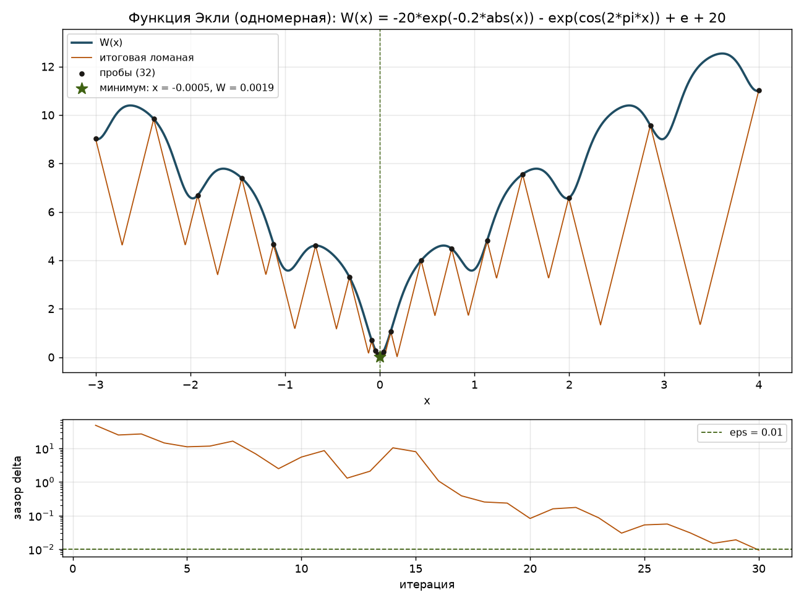
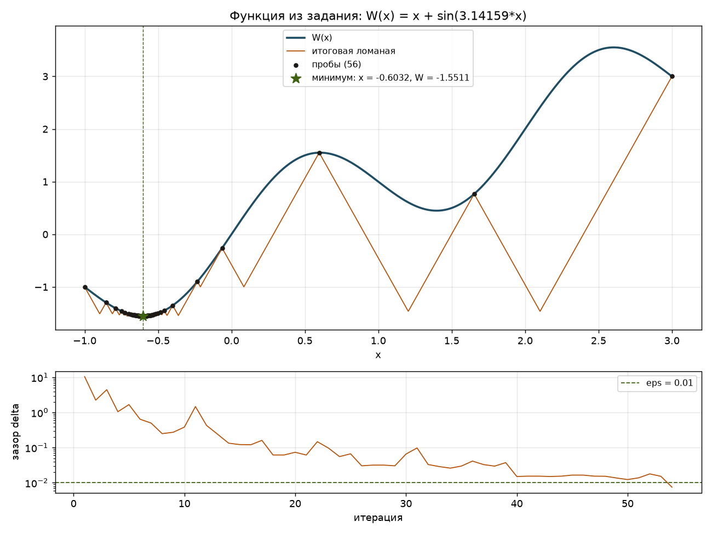

| ФИО: | Конанчук Иван Алексеевич |
| Поток: | 1.1 |
| Код: | https://github.com/chikirao/met_opt (папка L2) |
Нужно найти глобальный минимум функции одной переменной $W(x)$ на отрезке $[a, b]$. Функция может иметь несколько локальных минимумов, и локальный спуск из одной точки сходится к ближайшему из них, который не обязательно глобальный. Программа принимает строку с формулой, концы отрезка и точность $\varepsilon$, а выдаёт рисунок (функция, итоговая ломаная, найденная точка), приближённые $x^*$ и $W(x^*)$, число итераций и время счёта.
Функция липшицева, если есть число $L$, что $|W(u) - W(v)| \le L|u - v|$: график нигде не круче прямой с наклоном $L$. Тогда для каждой точки $u$, в которой посчитано значение функции, график на всём отрезке лежит не ниже «галочки» $g(x) = W(u) - L|x - u|$. Верхняя огибающая всех галочек (ломаная) лежит под графиком и служит нижней оценкой функции, а её нижние углы показывают, где функция может принимать наименьшие значения.
Алгоритм я реализовал в том же виде, что и на практике:
Критерий остановки обоснован так: $p$ это наименьшее значение ломаной, а ломаная лежит под графиком, значит глобальный минимум не меньше $p$. Лучшее найденное значение не больше $W(x)$, поэтому оно отличается от глобального минимума меньше чем на $\varepsilon$.
Минимум не ищется перебором по мелкой сетке: каждая следующая точка вычисляется как пересечение галочек.
$L$ должна быть не меньше наибольшего значения $|W'|$ на отрезке, иначе ломаная может пройти выше графика и метод пропустит минимум. Если $L$ задана, программа использует её. Если нет, я оцениваю её так: на отрезке беру соседние точки, считаю $|\Delta W| / |\Delta x|$, нахожу максимум и добавляю запас 20%. Эта оценка нужна только для $L$, минимум по ней не ищется. $L$ выбирается один раз до начала расчёта и не меняется. Завышенная $L$ не нарушает корректность ответа, но увеличивает число итераций.
Сначала я проверил программу на примере, который разбирали на практике: $W(x) = \tfrac12(x-2)^2 + \sin(\pi x)$, $[0, 4]$, $L = 6$, $\varepsilon = 1$. Все пробы совпали с ручным расчётом с практики.
| шаг | проба на практике | $x$ | $p$ | $W(x)$ | $\delta$ |
|---|---|---|---|---|---|
| 1 | 2 | 2.000 | -10.000 | 0.000 | 10.000 |
| 2 | 7/6 ≈ 1.167 | 1.167 | -5.000 | -0.153 | 4.847 |
| 3 | 17/6 ≈ 2.833 | 2.833 | -5.000 | 0.847 | 5.847 |
| 4 | 0.763 | 0.763 | -2.576 | 1.444 | 4.020 |
| 5 | 1.571 | 1.571 | -2.576 | -0.883 | 1.693 |
| 6 | 2.346 | 2.346 | -2.076 | 0.945 | 3.022 |
| 7 | 3.321 | 3.321 | -2.076 | 0.027 | 2.103 |
| 8 | 1.430 | 1.430 | -1.730 | -0.813 | 0.917 |
На шаге 8 зазор $0.917 < 1$, остановка. Лучшая посчитанная точка $x^* \approx 1.571$, $W \approx -0.883$ (глобальный минимум около $1.546$ и $-0.887$, разница меньше $\varepsilon$).


Одномерная функция Растригина. На отрезке четыре локальных минимума (около −1, 0, 1 и 2), глобальный в нуле. Отрезок я выбрал несимметричным, чтобы первая проба не попала в ноль сразу.
$W(x) = x^2 - 10\cos(2\pi x) + 10$, отрезок $[-1.3, 2.7]$, $\varepsilon = 0.01$. Наибольшая крутизна по оценке $\max|W'| \approx 67.33$, беру $L = 80.80$ (запас 20%).

| найденный минимум | $x^* \approx 0.0000$, $W(x^*) \approx 0.0000$ |
| итераций | 152 (вычислений $W$: 154, вместе с концами отрезка) |
| время | 4.53 мс |
| остановка | последняя проба $x = -0.0003$: $\delta = W - p = 0.0088 < 0.01$ |
Одномерная функция Экли. На отрезке много локальных минимумов, глобальный в нуле. В нуле у функции излом из-за $|x|$, производной там нет, но функция липшицева.
$W(x) = -20\,e^{-0.2|x|} - e^{\cos(2\pi x)} + e + 20$, отрезок $[-3, 4]$, $\varepsilon = 0.01$. Наибольшая крутизна по оценке $\max|W'| \approx 13.05$, беру $L = 15.66$ (запас 20%).

| найденный минимум | $x^* \approx -0.0005$, $W(x^*) \approx 0.0019$ |
| итераций | 30 (вычислений $W$: 32, вместе с концами отрезка) |
| время | 1.67 мс |
| остановка | последняя проба $x = -0.0009$: $\delta = W - p = 0.0094 < 0.01$ |
Функция из примера в задании. На отрезке два локальных минимума: около $-0.6$ (глобальный) и около $1.4$.
$W(x) = x + \sin(3.14159\,x)$, отрезок $[-1, 3]$, $\varepsilon = 0.01$. Наибольшая крутизна по оценке $\max|W'| \approx 4.14$, беру $L = 4.97$ (запас 20%).

| найденный минимум | $x^* \approx -0.6032$, $W(x^*) \approx -1.5511$ |
| итераций | 54 (вычислений $W$: 56, вместе с концами отрезка) |
| время | 0.84 мс |
| остановка | последняя проба $x = -0.6017$: $\delta = W - p = 0.0075 < 0.01$ |
| функция | отрезок | $\varepsilon$ | $L$ | $x^*$ | $W(x^*)$ | итераций | время, мс |
|---|---|---|---|---|---|---|---|
| Пример с практики | [0, 4] | 1 | 6.00 | 1.5706 | -0.8833 | 8 | 0.08 |
| Функция Растригина (одномерная) | [-1.3, 2.7] | 0.01 | 80.80 | 0.0000 | 0.0000 | 152 | 4.53 |
| Функция Экли (одномерная) | [-3, 4] | 0.01 | 15.66 | -0.0005 | 0.0019 | 30 | 1.67 |
| Функция из задания | [-1, 3] | 0.01 | 4.97 | -0.6032 | -1.5511 | 54 | 0.84 |
Во всех примерах найден глобальный минимум. По рисункам видно, что пробы сгущаются около локальных минимумов, а на участках, где функция заведомо выше уже найденного значения, их почти нет.
Код на Python в файле piyavsky.py. Запуск:
python piyavsky.py "x + sin(3.14159*x)" -1 3 0.01 (можно добавить --L 6 и --show).
parse превращает строку в функцию; разрешены только $x$ и математические функции (sin, cos, exp, abs, pi и т.д.).estimate_L оценивает $L$, если она не задана.corner считает угол ломаной по формуле выше.piyavsky основной цикл: выбор угла, проба, зазор, остановка.plot рисует функцию, ломаную, пробы, ответ и график зазора по итерациям.Все примеры из отчёта запускаются командой python examples.py.
Я реализовал метод ломаных на Python: программа принимает формулу функции строкой, концы отрезка и точность $\varepsilon$, на каждом шаге считает углы ломаной как пересечения галочек, вычисляет функцию в самом низком угле и останавливается, когда зазор между значением функции и углом ломаной меньше $\varepsilon$. На примере с практики ($L = 6$, $\varepsilon = 1$) все 8 проб совпали с ручным расчётом, ответ $x^* \approx 1.571$, $W \approx -0.883$. На функции Растригина метод нашёл глобальный минимум $x^* \approx 0.0000$ за 152 итерации, на функции Экли $x^* \approx -0.0005$ за 30 итераций, на функции из задания $x^* \approx -0.603$, $W \approx -1.551$ за 54 итерации, каждый расчёт занял несколько миллисекунд. Больше всего итераций потребовала функция Растригина: у неё самая большая константа Липшица ($L \approx 80.8$), а соседние локальные минимумы около $\pm 1$ лишь примерно на 1 выше глобального, поэтому ломаная долго не может их отбросить. Главное ограничение метода в том, что константу $L$ нужно знать заранее: при заниженной $L$ ломаная проходит выше графика и минимум можно пропустить, а при сильно завышенной растёт число итераций.